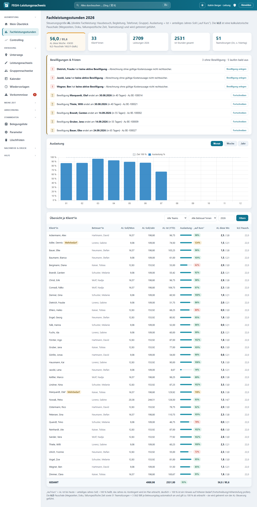

Fachleistungsstunden (FLS) & kalkulatorische Leistungseinheit (kLE)¶

Fachleistungsstunden-Dashboard: AL-Auslastung (Ist gegen anteiliges Jahres-Soll) je Klientin.*
Diese Seite erklärt die zentrale Abrechnungslogik der App: Was zählt als Fachleistungsstunde (FLS), wie sich die bewilligte Leistung aus AL und kLE zusammensetzt, wie der kLE-Anteil berechnet wird und wie die Auslastung (Ist gegen Kontingent) ermittelt wird.
Fachliche Grundlage
Berlin, gültig ab 01.01.2026, Beschluss 3/2026 (Rahmenvertrag Eingliederungshilfe). Alle Zeit- und Betragsgrößen werden in der App als Decimal geführt (keine Fließkommazahlen), weil sie abrechnungsrelevant sind. Rundung erfolgt kaufmännisch (ROUND_HALF_UP) auf 3 Nachkommastellen (Q3 = 0.001).
Senats-Systematik (Umrechnungstool „ab März 2026")¶
Der Senat (SenASGIVA) stellt je Angebot ein Umrechnungstool bereit, das die alte
Tagessatz-Vergütung (Maßnahmepauschale je HBG 1–12) erlösneutral in die neue
FLS-Systematik überführt. Die App bildet diese Logik formelgetreu nach
(nachweis/services_senatstool.py, verifiziert in tests_senatstool.py gegen die
Original-Zellwerte des Tools). Drei Ausgabegrößen steuern die Abrechnung:
| Größe | Bedeutung | Wo in der App |
|---|---|---|
| FLS-Satz (€/Std) | ein Satz für alles: Ø-Personalkosten ÷ (Netto-Jahresarbeitsstunden × Auslastung) | Parameter-Tab „FLS-Satz" |
| individuelle FLS je HBG, pro Woche | fallspezifische Zeiten, über Personalschlüssel-Gewichtung (HBG 1 = 0,136 … HBG 12 = 0,755) auf die HBG verteilt | Parameter-Tab HBG-Tabelle → Vorbelegung Belegungsliste |
| kLE je Tag | einheitlich für alle Klient*innen, je Kalendertag; deckt fallunspezifische Zeiten, Erreichbarkeit, Wegezeiten, Sonstiges | Parameter-Tab „kLE je Tag" |
Abrechnungsformel (Monat, je Klient*in)
Die kLE ist eine Pauschale – sie erfordert keine Einzeldokumentation und ist HBG-unabhängig. Umrechnung Woche ↔ Monat: × 4,3482 (= 365,25 ÷ 7 ÷ 12).Was ist fallspezifisch, was fallunspezifisch? (Handreichung, Beschluss 3/2026 Anlage)
WFS (weitere fallspezifische Leistungen, zählen als FLS): Vor-/Nachbereitung individueller Termine (2.1), Fallbesprechungen (2.2), Fallsupervision (2.3), Dokumentation inkl. Verlaufsdoku, Leistungsnachweis, THFD-Berichte (2.4). Fallunspezifisch (durch die kLE-Pauschale abgedeckt, NICHT als FLS dokumentierbar): Teambesprechungen/Teamsitzung, Teamsupervision, Erreichbarkeit, Wegezeiten.
Leistungsarten im Überblick¶
In der App ist jede erfasste Leistung genau einer Leistungsart zugeordnet (Leistungsart in models.py).
| Kürzel | Bezeichnung | Zählt als FLS? |
|---|---|---|
| FS | fallspezifische Leistung | ✅ ja |
| WFS | weitere fallspezifische Leistung | ✅ ja |
| BAO | Betreuung am anderen Ort | ✅ ja |
| FUS | fallunspezifische Leistung | ❌ nein |
| FZ | Fahrtzeit | ❌ nein |
| AL | Assistenzleistung | ❌ nein |
| KLE | kalkulatorische Leistungseinheit | ❌ nein |
| FH | Freihaltung/Abwesenheit (50 %) | ❌ nein |
FLS = FS + WFS + BAO
Als Fachleistungsstunden zählen ausschließlich die drei Arten FS, WFS und BAO. Im Code ist das die Menge:
Diese Definition ist die einzige Quelle der Wahrheit – sowohl die Jahres-Auswertung als auch der amtliche Monatsnachweis (druck_nachweis) summieren die FLS über genau diese Menge.
Bewilligte Leistung: AL + kLE = FLS pro Monat¶
Jeder Klientin hat in der Belegungsliste zwei bewilligte Monatswerte (Stammdaten, models.Klient):
- AL – bewilligte Assistenzleistung pro Monat (Feld
al, "bewilligt FLS/Monat (AL)") - kLE – davon kalkulatorische Leistungseinheit pro Monat (Feld
kle, "davon kLE/Monat")
Daraus ergibt sich das monatliche Kontingent:
Formel: bewilligte FLS pro Monat
Der Jahreswert ist schlicht das Zwölffache des Monatswerts:
Formel: Kontingent pro Jahr
Im Code:kontingent_j = kontingent_m * 12 (in fachleistungsstunden) bzw. die Property fls_gesamt_jahr.
flowchart LR
AL["AL – Assistenzleistung / Monat"] --> S("+")
KLE["kLE – kalkulatorische Leistungseinheit / Monat"] --> S
S --> M["FLS_gesamt = AL + kLE (Monat)"]
M -->|"× 12"| J["Kontingent (Jahr)"]kLE-Anteil¶
Der kLE-Anteil gibt an, welcher Bruchteil des bewilligten Monatskontingents auf die kalkulatorische Leistungseinheit entfällt. Er wird auf 3 Nachkommastellen gerundet.
Formel: kLE-Anteil
Interpretation
Ein kLE-Anteil von z. B. 0.250 bedeutet: 25 % des bewilligten Monatskontingents sind kalkulatorische Leistungseinheit (u. a. Teamsitzung, siehe Teamsitzung & Gruppen), die restlichen 75 % sind direkte Assistenzleistung.
Ist-Leistung: Woraus sie sich zusammensetzt¶
Die Ist-FLS eines/einer Klient*in in einem Jahr ist die Summe aus drei Quellen (siehe fachleistungsstunden in services.py):
- Manuelle Leistungen – alle im Leistungsnachweis erfassten Zeilen des Jahres, die nicht automatisch erzeugt wurden (
exclude(auto=True)). Deren Dauer ergibt sich aus Beginn/Ende (dauer_stunden). - Gruppen-Anteile – der auf den/die Klient*in entfallende Zeitanteil aus Gruppenangeboten (
zeit_pro_klient, siehe Gruppen-Seite). - Teamsitzung – der anteilige Teamsitzungs-Wert, aber nur für Klientinnen im Status Betreuung*.
Formel: Ist (Jahr)
Beendete Klient*innen
Steht der Status auf Beendigung, erhält der/die Klientin keinen* Teamsitzungs-Anteil (ts_row = 0). Der Teiler der Teamsitzung bleibt davon unberührt (siehe Teamsitzung-Seite).
Auslastung = Ist ÷ Kontingent¶
Die Auslastung setzt die tatsächlich geleisteten Stunden ins Verhältnis zum bewilligten Jahres-Kontingent.
Formel: Auslastung
In der Zeitreihen-Auswertung (auslastung_zeitreihe) wird die Auslastung zusätzlich pro Monat und pro Kalenderwoche ausgewiesen und dort als Prozentwert dargestellt:
- Monats-Kontingent = Summe der
fls_gesamtaller (gefilterten) Klient*innen - Jahres-Kontingent = Monats-Kontingent × 12
- Wochen-Kontingent = Jahres-Kontingent ÷ 52
- Prozent =
ist / kontingent × 100, gerundet auf 1 Nachkommastelle
Lesart
- < 100 %: Es besteht noch Rest-Kontingent (Feld
restist positiv). - = 100 %: Kontingent exakt ausgeschöpft.
- > 100 %: Überschreitung – hier lohnt ein Blick, ob eine Anpassung der Bewilligung nötig ist.
Rechenbeispiel¶
Beispiel-Klient*in (fiktiv)
Bewilligt: AL = 9,000 h/Monat, kLE = 3,000 h/Monat.
| Größe | Rechnung | Ergebnis |
|---|---|---|
| FLS_gesamt (Monat) | 9,000 + 3,000 | 12,000 h |
| Kontingent (Jahr) | 12,000 × 12 | 144,000 h |
| kLE-Anteil | 3,000 / 12,000 | 0,250 (25 %) |
| Ist (Jahr, angenommen) | — | 120,000 h |
| Rest | 144,000 − 120,000 | 24,000 h |
| Auslastung | 120,000 / 144,000 | 0,833 (83,3 %) |
Woher kommen die Werte?¶
flowchart TD
K[Klient · Stammdaten<br/>AL, kLE] --> KONT[Kontingent Monat/Jahr]
L[Manuelle Leistungen<br/>FS/WFS/BAO ...] --> IST
G[Gruppen-Anteile] --> IST
TS[Teamsitzung<br/>nur Status Betreuung] --> IST
IST[Ist-FLS] --> A{Auslastung<br/>Ist ÷ Kontingent}
KONT --> A
A --> REST[Rest & Auslastung %]Verwandte Seiten
- Teamsitzung & Gruppen – wie die automatischen KLE-Anteile entstehen
- Berichtsfristen – Entwicklungsbericht vor KÜ-Ende